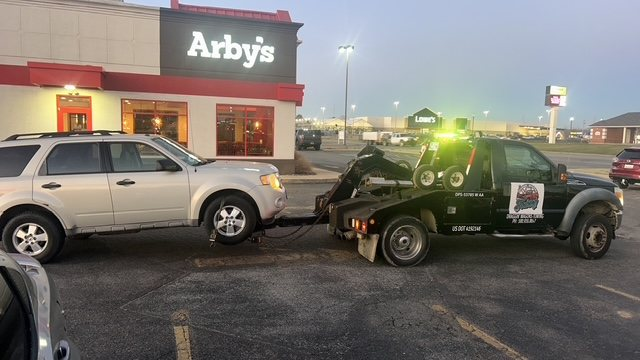

Transparent, upfront service, no surprises. Here's exactly what we do and how we can help, 24 hours a day.

Cars, small SUVs and light trucks towed safely on our flatbed wreckers. Whether it's a breakdown, accident or a vehicle that just won't start, we'll get it where it needs to go.
Full-size trucks, vans and larger SUVs need the right equipment. Our medium-duty wreckers handle bigger vehicles without a scratch.
Motorcycles require careful handling. We use proper tie-downs and flatbed transport so your bike arrives exactly as it left.
Need a vehicle towed outside of Bryan or Marshall County? We handle long-distance tows across state lines with the same care as a tow across town.
Locked your keys inside? Our techs use safe, non-damaging entry tools to get you back into your vehicle fast, day or night.
Dead battery? We'll come to you and get your engine running again in minutes, wherever you're parked.
Ran out of gas on the highway? We'll bring fuel straight to you so you can get back on the road without waiting on a second tow.
Flat tire on the shoulder isn't safe to fix alone. We'll swap it for your spare on-site, quickly and safely.
Property managers, businesses and homeowners: we remove abandoned or unwanted vehicles from private lots and lawns quickly and legally.
Licensed, professional repossession towing for lenders and finance companies throughout Bryan & Marshall County.